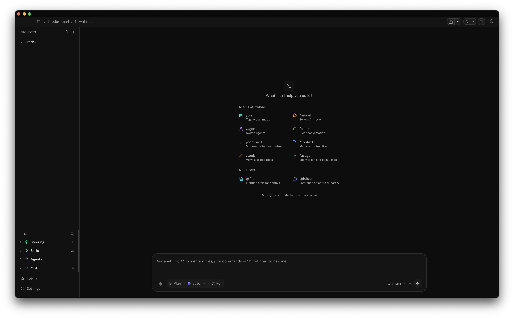

Kirodex
AI coding agents on your desktop. Chat, plan, diff, commit — all from one native app.
Built with Tauri v2 and React 19. Powered by the Agent Client Protocol. Works with macOS, Linux, and Windows.

AI coding agents on your desktop. Chat, plan, diff, commit — all from one native app.
Built with Tauri v2 and React 19. Powered by the Agent Client Protocol. Works with macOS, Linux, and Windows.
